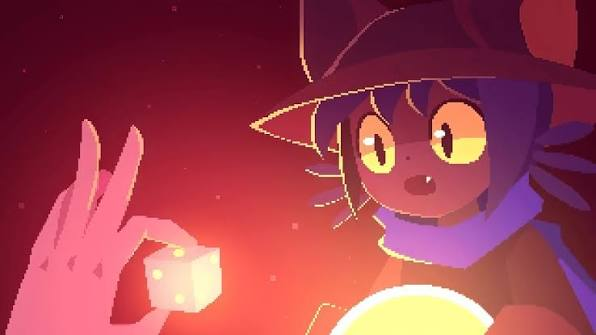
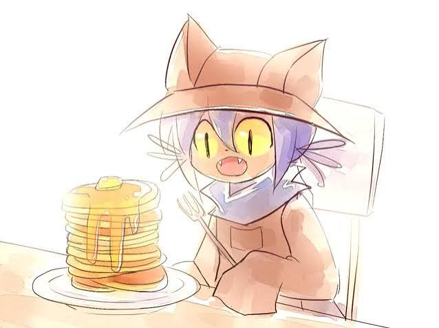
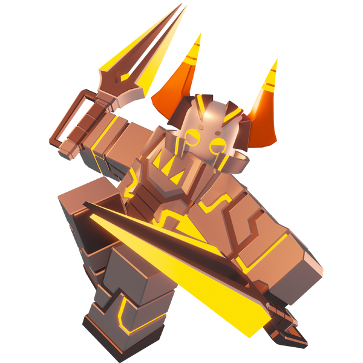
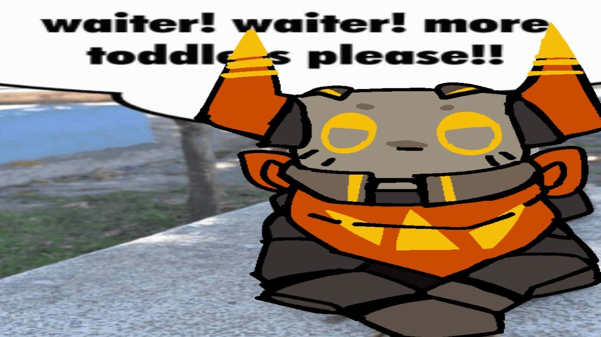
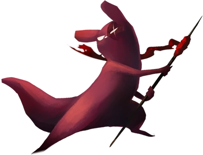
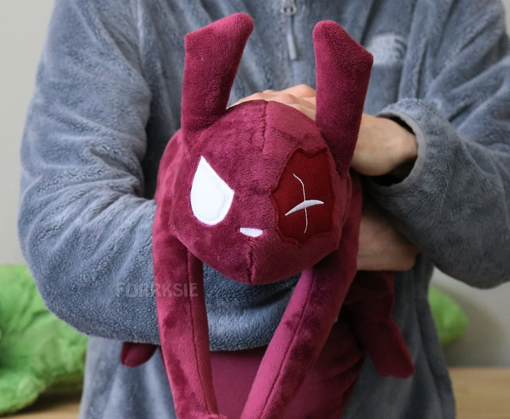
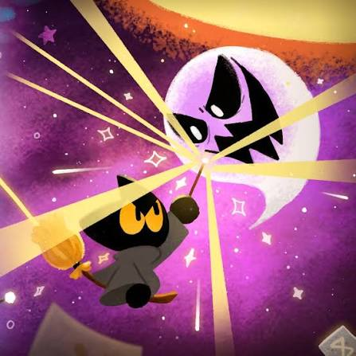
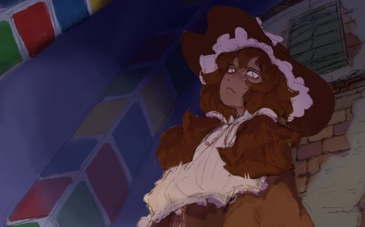
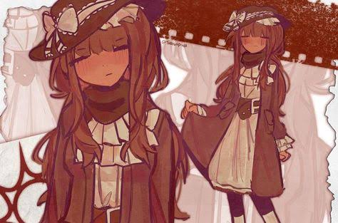

TOP FIVE OF MY FAVORITE VIDEO GAME CHARACTERS
by yours truly Kenward

by yours truly Kenward
They are a child tasked with returning the sun to the Tower and saving the World from dying out. Niko contacts the Player throughout most of the game when in need of help or simply conversation about Niko's and the Player's origins.



Biograft is a melee Phighter that specializes in pressuring targets and chasing them down. Biograft plays like a glass cannon, dealing high damage while sporting the lowest health in the roster. Their passive, Power of Biograft / Heat, increases its attack speed when using Dual Swing while also limiting their aggressiveness. As Biograft fills its heat meter, it could lead to it being left vulnerable if the bar fills up completely. Echo Execution allows Biograft to confirm kills on enemies at 25% health. Biograft's abilities allows it to get in and out of fights swiftly, allowing for more methodical gameplay.



A fierce combatant, master of pyrotechnics and explosives. Keen to move up in the foodchain, your journey will surely be one lined with constant bloodshed and warfare. The Artificer is one of five playable Slugcats in the More Slugcats Expansion. They are agile and strong, capable of producing explosions to propel themself through the air and able to craft explosives using certain objects. Artificer is unlocked as a playable character after completing the campaign of either Monk or Survivor.



Momo is a Black Cat character that has appeared in several Google
Doodles, Momo is based on a real cat (born April 15, 2010) who was
owned by former Doodler Juliana Chen and now lives with her relative
Sidney.
Momo made her debut in the Halloween 2015 doodle. Appearing as a
normal, non-anthropomorphic cat owned by the Yellow Witch (to show
that she is obsessed with cats). Momo later starred in her own game
in the Halloween 2016 doodle. She is a freshman student at a
wizarding school with several other animals including a Frog, a Dog,
an Owl, and an anthropomorphic Pumpkin. In the game, Momo defeats
the ghosts by the player drawing symbols with her wand that appear
above the ghosts' head.


Born in the Shire of Reverdot in New Dievodora, Nashatra lived a
relatively quiet life in her hometown until the age of 20, when she
was informed she was a sleepwalker presumably by the Rose Seekers.
She then had to undergo training by the Rose Seekers to befit
herself for the task, presumably meeting Adelaide along the way,
showing Nash the ropes of the dreams in the Dreamsphere(?). Not much
is known about the prologue of this game other than small pieces
scattered throughout the various Dreamsphere games.

